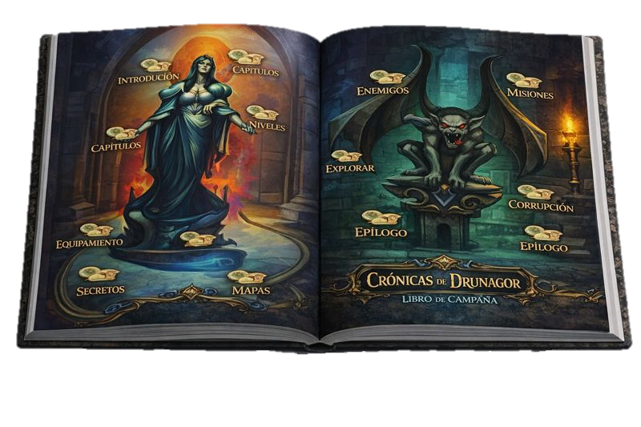
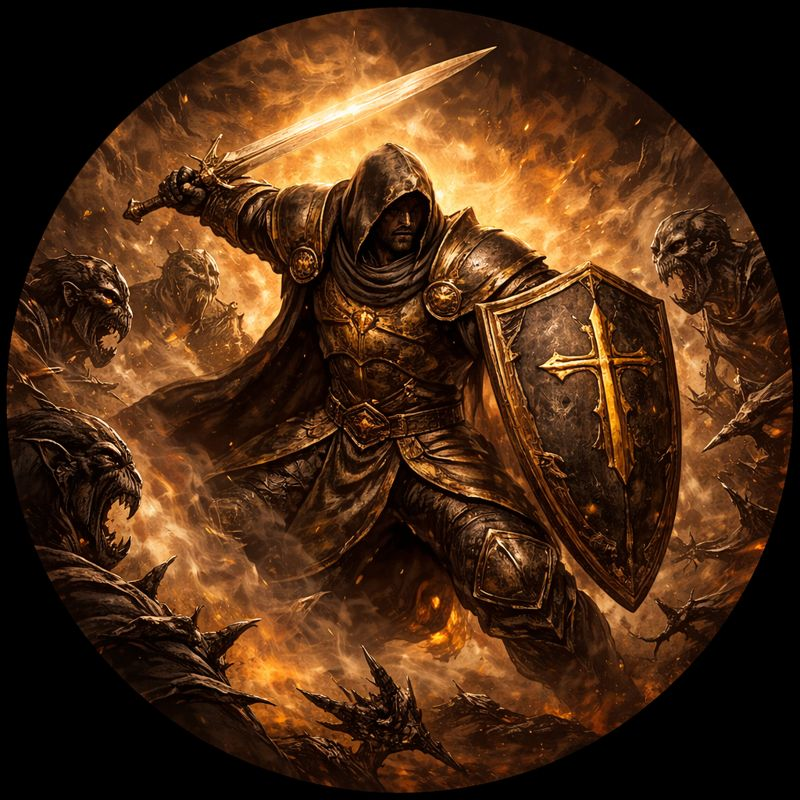
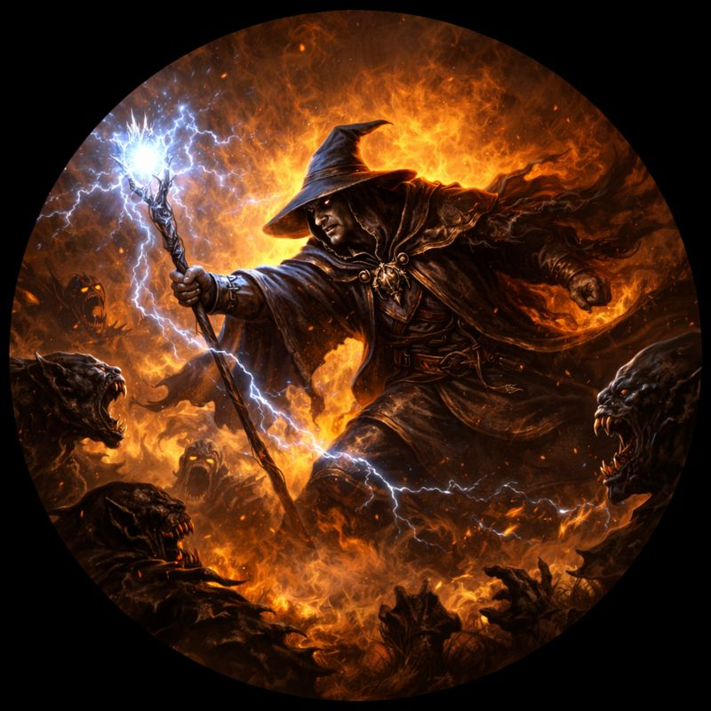
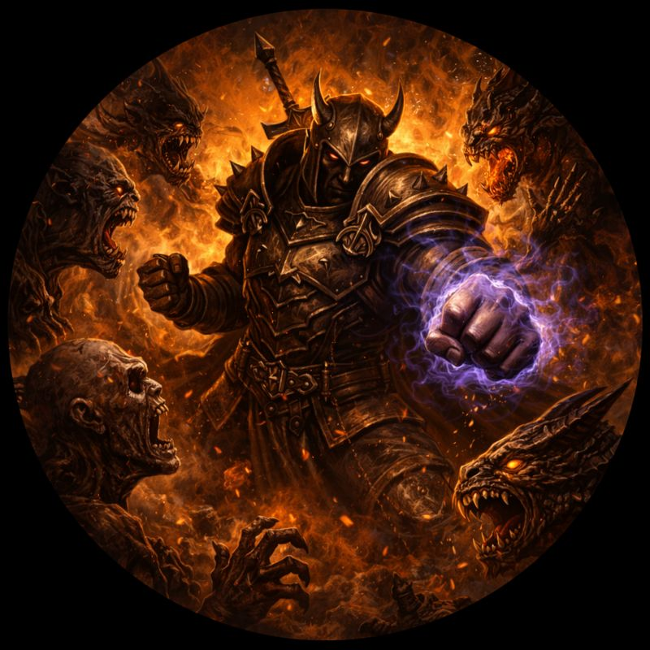

Instrucciones
Cómo Jugar A Cronicas De Drunagor
Crónicas de Drunagor: El Legado Oscuro es un juego de mesa cooperativo de fantasía oscura.
Cada jugador controla un héroe que explora territorios peligrosos, combate enemigos y completa misiones
para detener la expansión de la Horda Oscura y salvar el reino de Drunagor.
- 👥 Jugadores: 1 a 5
- ⏱️ Duración: larga (campañas o misiones)
- 🤝 Cooperativo: o ganan todos o pierden todos
Mecánicas principales
- Exploración por losetas: El tablero se construye con losetas que revelan nuevas zonas a medida que los héroes avanzan.
- Cartas de evento: Cada turno se roba una carta que puede incluir enemigos, tesoros, trampas o ayudas mágicas.
- Combate con dados: Los enfrentamientos se resuelven tirando dados especiales para ataque y defensa.
- Gestión de habilidades: Cada héroe tiene habilidades únicas que se activan en momentos estratégicos.
- Cooperación: Los jugadores deben coordinar sus acciones para sobrevivir y completar misiones.
PREPARACIÓN DE LA PARTIDA
1️⃣ Elegir escenario
Cada escenario de la campaña indica:
- Qué losetas usar
- Qué enemigos aparecen
- Objetivo de la misión
- Reglas especiales
Se lee el texto inicial del libro de campaña.
2️⃣ Elegir héroes
Cada jugador elije un héroe, que incluye:
- Miniatura
- Tablero de héroe
- Cartas de habilidades
- Vida, energía y dados
3️⃣ Preparar el tablero
- El escenario indica qué losetas colocar
- Algunas zonas empiezan ocultas
- Se colocan:
- Enemigos
- Cofres
- Puertas
- Objetos interactivos
4️⃣ Preparar mazos
Se preparan:
- Mazo de enemigos
- Mazo de eventos
- Cartas del escenario
- Dados de combate
Componentes del juego
Libros del juego
Crónicas de Drunagor usa varios libros físicos, y cada uno tiene un nombre y una función concreta dentro de la partida.
Tablero
Este tablero representa el mundo donde se desarrolla la aventura. Aquí los héroes se enfrentarán a enemigos, tomarán decisiones y avanzarán a través de la historia del juego

HÉROES
Cada jugador elige un héroe. Los enemigos aparecen según las cartas de evento.
 Paladín
Paladín
 Líder de Horda
Líder de Horda
Enemigos Comunes
CÓMO SE JUEGA UN TURNO
🟢 FASE DE HÉROES
- 🚶 Moverse
- ⚔️ Atacar
- 🛡️ Defenderse
- 🔍 Interactuar con objetos
- ✨ Usar habilidades especiales
Los jugadores actúan en el orden que quieran.
En su turno, un héroe puede gastar energía para realizar acciones.
ACCIONES COMUNES:
Se puede realizar la jugada en el orden que quieras mientras tengas energía.
Ejemplos de combates de fantasía
  ⚔️ FASE DE COMBATE
- Lanzas dados (según tu arma/habilidad)
- El enemigo puede defenderse
- Se aplican:
- Daño al enemigo
- Efectos (sangrado, veneno, empujones, etc.)
🔴 FASE DE ENEMIGOS
- Los enemigos se activan
- Se mueven hacia los héroes
- Atacan según su comportamiento
- Aparecen nuevos enemigos si el escenario lo indica
Después de que todos los héroes actúan:
⚠️ FASE DE AMENAZA
- Vida
- Ataques
- Habilidades
Cada enemigo tiene: